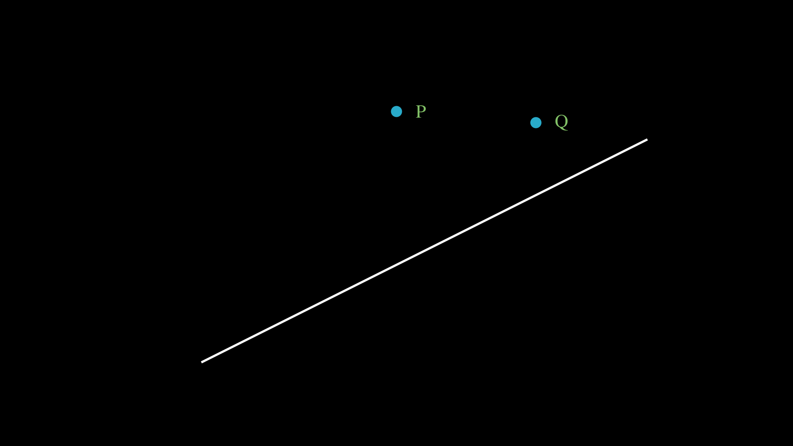

Named after the Italian Mathematician, Giovanni Fransesco Fagnano dei Toschi, Fagnano’s Problem (for the rectangle) asks to find one point on each edge of the rectangle so that the inner quadrilateral formed has the minimal perimeter.
Given a rectangle, we have to find four points on the perimeter (i.e. one point on each edge, in pink) such that the inner quadrilateral (in turquoise) has minimal perimeter
Any Conjectures?
Maybe some intuition...
Here's a well-known result that might help us...we use this almost everyday!
The shortest distance between any two points is a straight line...atleast in the Euclidean Plane :)
How does this apply to our problem?
consider two points on one side of a line...
Where does the point R lie on the line such that PR + QR is minimal?
Reflection!
Now that we have some intuition/idea about a tool we can use to solve this...let's apply it!
Let's start off with some reflection...
Let's do the same for the four random points and the consequent quadrilaterals they form
For the climax...
The solution is the alignment of the points with the straight line drawn below
Why that line?
That's because the point on the far bottom left is the same point reflected three times; it has just moved to the far top right position. Since it's the same point (as we saw in the reflection of Q and Q'), the shortest path between those two points is the straight line
Let's do some alignment...
Almost there...
So the solution is the midpoint of each edge gives the minimal perimeter of the inner quadrilateral
But is that the only solution?
.......
So two solutions?
There are infinitely many solutions!
In general, if the edges of the inner quadrilateral are parallel to the diagonals of the triangle, then it's a solution!
Isn't this mindblowing!!!
PS: What if (like Marvel)....Can this be applied to other polygons?